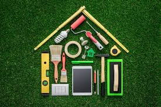

<ion-header>
  <ion-toolbar color="primary">
    <ion-buttons slot="start">
      <ion-menu-button></ion-menu-button>
    </ion-buttons>
    <ion-title>
      Crawled
    </ion-title>
  </ion-toolbar>
</ion-header>

<ion-content>
  <div [ngSwitch]="loadingState">
    <div *ngSwitchCase="'noboards'">
      <ion-card>
        <ion-card-header>
          <ion-card-subtitle>Add Boards</ion-card-subtitle>
          <ion-card-title>Press the add button below</ion-card-title>
        </ion-card-header>

        <ion-card-content>
          
          Your awesome home automation is just one step away
        </ion-card-content>
      </ion-card>
    </div>
    <div *ngSwitchCase="'boards'">
      <div *ngIf="boards.length ===0">
        <div *ngFor="let board of [1,2,3]">
          <ion-card>
            <ion-card-header>
              <ion-skeleton-text
                animated
                style="width: 20%"
              ></ion-skeleton-text>
            </ion-card-header>
            <ion-card-content>
              <ion-skeleton-text
                animated
                style="width: 20%"
              ></ion-skeleton-text>
            </ion-card-content>
          </ion-card>
        </div>
      </div>
      <div *ngIf="boards.length !==0">
        <div *ngFor="let board of boards">
          <ion-card [color]="board.isOnline ? '':'danger'">
            <ion-card-header>
              <ion-card-title>{{board.name | uppercase}}</ion-card-title>
              <ion-card-title>{{board.boltProductName}}</ion-card-title>
            </ion-card-header>
            <ion-card-content>
              {{board.description}}
            </ion-card-content>
            <ion-grid>
              <ion-row>
                <ion-col>
                  <ion-button
                    color="light"
                    [routerDirection]="'forward'"
                    [routerLink]="'/boards/cud/'+board.id"
                    expand="full"
                  >
                    Edit</ion-button
                  >
                </ion-col>
                <ion-col>
                  <ion-button
                    color="secondary"
                    [routerDirection]="'forward'"
                    [routerLink]="'/boards/read/'+board.id"
                    expand="full"
                  >
                    Read</ion-button
                  >
                </ion-col>
              </ion-row>
            </ion-grid>
          </ion-card>
        </div>
      </div>
    </div>
  </div>
  <ion-fab vertical="bottom" horizontal="end" slot="fixed">
    <ion-fab-button
      color="secondary"
      [routerDirection]="'forward'"
      [routerLink]="'/boards/cud/new'"
    >
      <ion-icon name="add"></ion-icon>
    </ion-fab-button>
  </ion-fab>
</ion-content>
